ARMA stochastic process¶
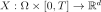
of dimension , where
, where 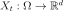
is the random variable at time . Under some general
conditions,
. Under some general
conditions, can be modeled by an
can be modeled by an  model
defined at the time stamp by:
model
defined at the time stamp by:(1)¶
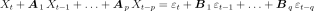
where the coefficients of the recurrence are matrix in
 and
and
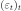
is white noise discretized on the same time grid as the process.
The coefficients
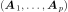
form the Auto Regressive (AR) part of the model, while the coefficients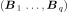
the Moving Average (MA) part.We introduce the homogeneous system associated to (1):
(2)¶
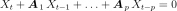
To get stationary solutions of (1), it is necessary to get its characteristic polynomial defined in (3):
(3)¶
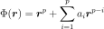
Thus the solutions of (2) are of the form
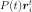
where the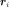
are the roots of the polynomials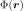
defined in (3) and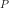
is a polynomials of degree the order of the root :The processes decrease with time if and only if the modulus of all the components of the roots are less than 1:
(4)¶
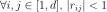
Once given the coefficients of the model , we
evaluate the roots of the polynomials and checks
the previous condition (4). The roots , are the
eigenvalues of the matrix  which writes in dimension
as:
which writes in dimension
as:
(5)¶
and in dimension 1:
(6)¶
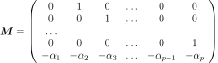
The matrix is known to be the companion matrix.
It is important to note that:
when asking for a realization of the stationary process modeled by
, one has to obtain a realization that does not
depend on the current state of the process;whereas, when one asks for a possible future extending a particular current state of the process, the realization of the model must depend on that current sate.
How to proceed to respect these constraints?
If we note and
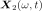
two distinct solutions of (1) associated to two distinct initial states, then, the process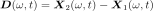
is solution of the homogeneous equation associated to (1) and then decreases with time under the condition (4). Let us note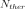
the number such that:(7)¶
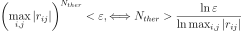
where the
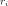
are the roots of the polynomials (3) and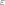
is the precision of the computer (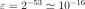
). Then, after instants, the process has disappeared, which means that the processes and do not differ any more. As a conclusion, after instants, the realization of the ARMA process does not depend any more on the initial state.That is why, when making a realization of the ARMA model, we perform a thermalization step that simply consists in realizing the model upon additional instants, erasing the first values and finally only retaining the other ones. That step ensures that the realization of the process does not depend on the initial state.
By default, the number is evaluated according to (7) by the method computeNThermalization. The User could get access to it with the method getNThermalization and can change the value with the method setNThermalization. (In order to give back to its default value, it is necessary to re-use the method computeNThermalization).
On the contrary, in the context of getting a possible future from a specified current state, the User should care that the number of additional instants
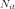
on which he wants to extend the process, is such that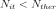
because beyond , the future has no link with the present. More precisely, after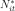
instants, such that:(8)¶
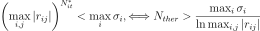
where the
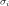
are the components of the covariance matrix of the white noise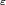
, the influence of the initial state is of same order than the influence of the white noise.Let us note that when the ARMA model is created without specifying the current state, we automatically proceed to a thermalization step at the creation of the ARMA object.
Before asking for the generation of a possible future, the user has to specify the current state of the ARMA model, thanks to the creation method that takes into account the current state. In that case, we do not proceed to the thermalization step.
As an ARMA model is a stochastic process, the object ARMA inherits the methods of the Process object. Thus, it is possible to get its marginal processes, its time grid, its dimension and to get several realizations at a time of the process.
API:
See
ARMASee
ARMACoefficientsSee
ARMAState
Examples: